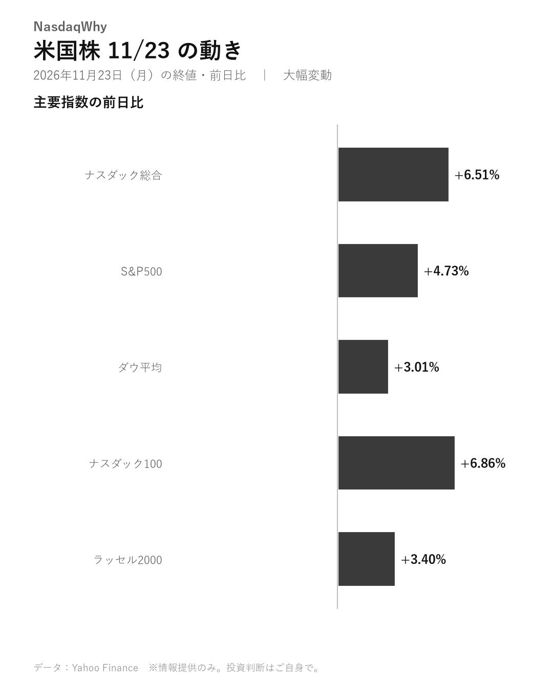
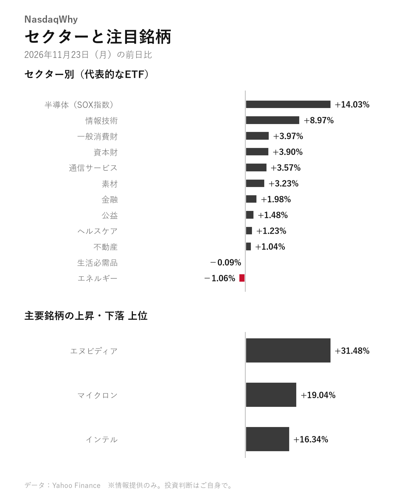

11/23の米国株：エヌビディアCEO復帰で、なぜ相場全体が急反発したのか？
2026年11月23日（月）の米国市場（日本時間の翌朝更新） ｜ 大幅変動
今日の疑問
エヌビディアCEO復帰で、なぜ相場全体が急反発したのか？
エヌビディア取締役会がフアン氏のCEO復帰を承認し、AI関連株の売りが止まるとの見方が広がった。前週の大幅安の反動も重なり、ナスダック総合は+6.51%。AI投資やデータセンターをめぐるリスクは残っており、次はAIへの資金の流れが続くかを確かめたい。

主要指数
| 名前 | 終値 | 前日比 | 騰落率 |
|---|---|---|---|
| ナスダック総合 | 24,089.56 | +1,471.83 | +6.51% |
| S&P500 | 7,237.17 | +326.78 | +4.73% |
| ダウ平均 | 49,595.31 | +1,447.98 | +3.01% |
| ナスダック100 | 26,746.10 | +1,717.12 | +6.86% |
| ラッセル2000 | 2,669.66 | +87.86 | +3.40% |
なぜ動いた？
- エヌビディア取締役会がフアン氏のCEO復帰を承認した。同社株は+31.48%と急騰し、AI株の売りが止まるとの見方が広がった。（出典：CNBC、Yahoo Finance、CNBC）
- 買いは半導体株全体に広がった。マイクロンはシティの分析も支えになり+19.04%。インテルやAMDも大きく上げた。（出典：FXLeaders、Yahoo Finance、24/7 Wall St.）
- 前週の大幅安の反動も出た。CNBCによると、ナスダックは前週、コロナ禍の初期以来の悪い一週間だった。（出典：CNBC、Aurora Sentinel）
- AI向けの資金が続くとの期待から、オラクルなどクラウド株や、AIの電力を担う銘柄にも買いが入った。（出典：MarketWatch、Investor's Business Daily）
深掘り：大きく動いた背景
エヌビディアの取締役会は、フアン氏のCEO復帰を承認した。同社株は+31.48%と急騰した。ナスダック総合は+6.51%、S&P500は+4.73%と大きく上げた。CNBCによると、ナスダックは前週、コロナ禍の初期以来となる悪い一週間だった。売られた分を取り戻す買いが一気に入った格好だ。 買いはエヌビディアと取引の多い企業に広がった。半導体（SOX指数）は+14.03%。マイクロンは+19.04%と跳ねた。支えになったのはシティの分析だ。エヌビディアの資金支援が止まっても、DRAM需要の落ち込みは限られるという内容である。インテルは+16.34%、AMDも+6.85%と上げた。 半導体の外にも買いは及んだ。MarketWatchによると、AI向けの資金が流れ続けるとの期待から、オラクルなどクラウド株が買われた。オラクルは+12.34%。燃料電池やウランなど、AIの電力を担う銘柄も上げた。 ただ、楽観一色ではない。CNBCは、今回の復帰が当面の底になるとの見方を紹介した。そのうえで、AI投資やデータセンターをめぐるリスクは残ると指摘した。前週末には中国CXMTの上場計画を受け、メモリー市況への警戒も出ていた。 トップ交代の混乱の背景や、経営と資金支援の方針がどう変わるのかは、材料からはまだ分からない。次は、AI企業への資金の流れが続くか、対中販売をめぐる米政府の姿勢、FOMCの金融政策発表を確かめたい。
セクター
半導体（SOX指数）は+14.03%、情報技術は+8.97%と上昇をけん引した。一般消費財や資本財も買われた。エネルギーは-1.06%と下げ、生活必需品も小安い。
- 騰落率の高い順：半導体（SOX指数） +14.03%、情報技術 +8.97%、一般消費財 +3.97%
- 騰落率の低い順：エネルギー -1.06%、生活必需品 -0.09%、不動産 +1.04%

注目銘柄
エヌビディアは+31.48%と急騰した。マイクロンは+19.04%。資金支援が止まってもDRAM需要の減少は限られるとのシティの分析が支えた。インテルは+16.34%、オラクルも+12.34%と大きく上げた。
- 上昇：エヌビディア（NVDA）+31.48%、マイクロン（MU）+19.04%、インテル（INTC）+16.34%
半導体トピック
- エヌビディアが基板の生産枠を確保し、韓国の新興半導体企業は調達難に（digitimes）
- 韓国政府がAI半導体の供給網を点検。HBMと基板の不足が小規模設計企業の重荷（BigGo Finance）
- マイクロンがシンガポールと台湾でHBMの増産を急ぐ（Chosunbiz）
関連市場
| 名前 | 終値 | 前日比 | 騰落率 |
|---|---|---|---|
| 米10年債利回り | 4.918% | +0.006pt | ― |
| ドル円 | 158.96 | -0.74 | -0.47% |
| 金先物 | 3,634.70 | +119.30 | +3.39% |
| 原油先物(WTI) | 80.24 | -3.74 | -4.45% |
| ビットコイン | 61,357.15 | +2,558.17 | +4.35% |
米10年債利回りは4.918%と小幅に上昇。ドル円は158.96円で円高・ドル安方向に動いた。金先物は+3.39%、原油先物(WTI)は-4.45%と下落。ビットコインは+4.35%。
今後の注目
- 12/9（水） FOMC（米連邦公開市場委員会）の金融政策発表（公式発表）
- ベッセント財務長官が言及した、エヌビディアの対中半導体販売の扱い（Nikkei Asia）
- CNBCが指摘する、AI投資とデータセンターをめぐる残るリスク（CNBC）
出典（見出し）
- CNBC：Tech stocks rally after Nvidia board approves Jensen Huang's return as CEO（記事）
- Yahoo Finance：Nvidia soars 31% as board reinstates Jensen Huang as CEO, chip stocks jump（記事）
- CNBC：‘This establishes a bottom’: Jensen Huang’s return seen as likely to stop market sell-off, for now（記事）
- FXLeaders：AMD, Intel, Micron, SanDisk, Broadcom Surge as Nvidia Reinstates Jensen Huang（記事）
- Yahoo Finance：Micron Soars 20% as Citi Says Ending Nvidia’s Financing Would Cut DRAM Demand Only 12%（記事）
- 24/7 Wall St.：Taiwan Semiconductor Rallies 17% as Jensen Huang's Return to NVIDIA Lifts Chip Stocks; Intel Surges 15%, AMD Jumps 8%（記事）
- CNBC：Tech stocks see monster rally after Jensen Huang returns as Nvidia CEO（記事）
- Aurora Sentinel：US stocks soar and recover much of last week's brutal loss after Jensen Huang returns to Nvidia（記事）
- MarketWatch：Oracle and CoreWeave stocks stage big gains as investors bet the AI cash will keep flowing（記事）
- Investor's Business Daily：AI Energy Stocks, From Fuel Cells To Uranium, Leap As Nvidia Soars（記事）
- digitimes：Nvidia secures substrate capacity as South Korean chip startups face supply squeeze（記事）
- BigGo Finance：South Korean Government Summons Nvidia, AMD, Intel to Review AI Chip Supply Chain; HBM and Substrate Shortages Put Small Fabless Firms on Edge（記事）
- Chosunbiz：Micron accelerates HBM expansion in Singapore and Taiwan（記事）
- Nikkei Asia：US must 'see where the buck stops' on Nvidia chip sales to China: Bessent（記事）
データ：Yahoo Finance
📝 note でも読めます（図つき・まとめ）：note.com/nasdaqwhy